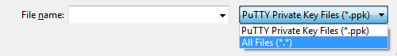
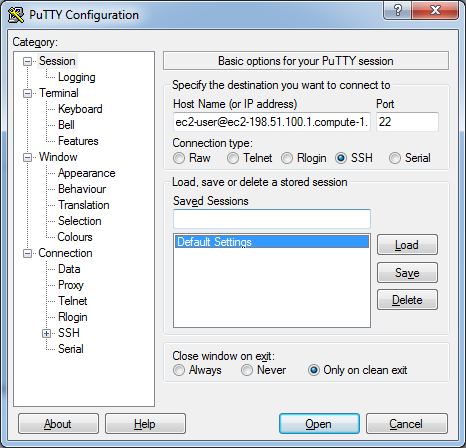
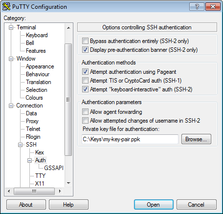
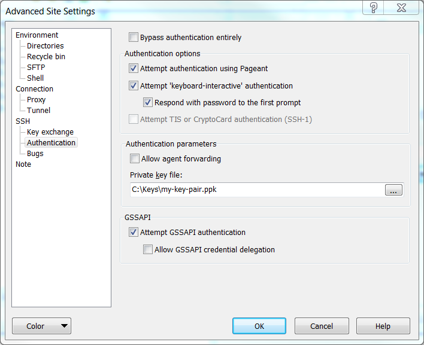
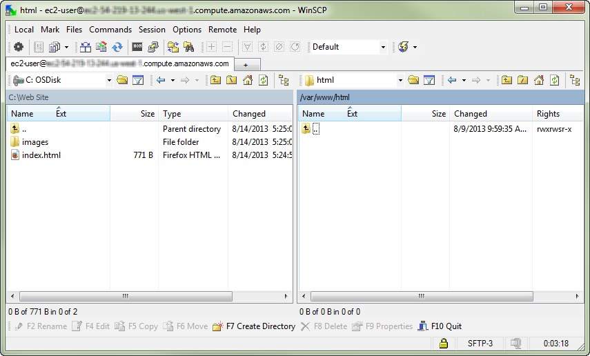

Connecting to Your Linux Instance from Windows Using PuTTY
The following instructions explain how to connect to your instance using PuTTY, a free SSH client for Windows. If you receive an error while attempting to connect to your instance, see Troubleshooting Connecting to Your Instance.
After you launch your instance, you can connect to it and use it the way that you'd use a computer sitting in front of you.
Note
After you launch an instance, it can take a few minutes for the instance to be ready so that you can connect to it. Check that your instance has passed its status checks. You can view this information in the Status Checks column on the Instances page.
Prerequisites
Before you connect to your Linux instance using PuTTY, complete the following prerequisites:
-
Install PuTTY
Download and install PuTTY from the PuTTY download page. If you already have an older version of PuTTY installed, we recommend that you download the latest version. Be sure to install the entire suite.
-
Get the ID of the instance
You can get the ID of your instance using the Amazon EC2 console (from the Instance ID column). If you prefer, you can use the describe-instances (AWS CLI) or Get-EC2Instance (AWS Tools for Windows PowerShell) command.
-
Get the public DNS name of the instance
You can get the public DNS for your instance using the Amazon EC2 console. Check the Public DNS (IPv4) column. If this column is hidden, choose the Show/Hide icon and select Public DNS (IPv4). If you prefer, you can use the describe-instances (AWS CLI) or Get-EC2Instance (AWS Tools for Windows PowerShell) command.
-
(IPv6 only) Get the IPv6 address of the instance
If you've assigned an IPv6 address to your instance, you can optionally connect to the instance using its IPv6 address instead of a public IPv4 address or public IPv4 DNS hostname. Your local computer must have an IPv6 address and must be configured to use IPv6. You can get the IPv6 address of your instance using the Amazon EC2 console. Check the IPv6 IPs field. If you prefer, you can use the describe-instances (AWS CLI) or Get-EC2Instance (AWS Tools for Windows PowerShell) command. For more information about IPv6, see IPv6 Addresses.
-
Locate the private key
Get the fully-qualified path to the location on your computer of the
.pemfile for the key pair that you specified when you launched the instance. -
Get the default user name for the AMI that you used to launch your instance
-
For Amazon Linux 2 or the Amazon Linux AMI, the user name is
ec2-user. -
For a Centos AMI, the user name is
centos. -
For a Debian AMI, the user name is
adminorroot. -
For a Fedora AMI, the user name is
ec2-userorfedora. -
For a RHEL AMI, the user name is
ec2-userorroot. -
For a SUSE AMI, the user name is
ec2-userorroot. -
For an Ubuntu AMI, the user name is
ubuntu. -
Otherwise, if
ec2-userandrootdon't work, check with the AMI provider.
-
-
Enable inbound SSH traffic from your IP address to your instance
Ensure that the security group associated with your instance allows incoming SSH traffic from your IP address. The default security group does not allow incoming SSH traffic by default. For more information, see Authorizing Inbound Traffic for Your Linux Instances.
Converting Your Private Key Using PuTTYgen
PuTTY does not natively support the private key format (.pem) generated by Amazon EC2. PuTTY has a tool named PuTTYgen, which can convert keys to the required PuTTY format (.ppk). You must convert your private key into this format (.ppk) before attempting to connect to your instance using PuTTY.
To convert your private key
-
Start PuTTYgen (for example, from the Start menu, choose All Programs > PuTTY > PuTTYgen).
-
Under Type of key to generate, choose RSA.

If you're using an older version of PuTTYgen, choose SSH-2 RSA.
-
Choose Load. By default, PuTTYgen displays only files with the extension
.ppk. To locate your.pemfile, select the option to display files of all types. -
Select your
.pemfile for the key pair that you specified when you launched your instance, and then choose Open. Choose OK to dismiss the confirmation dialog box. -
Choose Save private key to save the key in the format that PuTTY can use. PuTTYgen displays a warning about saving the key without a passphrase. Choose Yes.
Note
A passphrase on a private key is an extra layer of protection, so even if your private key is discovered, it can't be used without the passphrase. The downside to using a passphrase is that it makes automation harder because human intervention is needed to log on to an instance, or copy files to an instance.
-
Specify the same name for the key that you used for the key pair (for example,
my-key-pair). PuTTY automatically adds the.ppkfile extension.
Your private key is now in the correct format for use with PuTTY. You can now connect to your instance using PuTTY's SSH client.
Starting a PuTTY Session
Use the following procedure to connect to your Linux instance using PuTTY. You
need the .ppk file that you created for your private key. If
you receive an error while attempting to connect to your instance, see Troubleshooting
Connecting to Your Instance.
To start a PuTTY session
-
(Optional) You can verify the RSA key fingerprint on your instance using the get-console-output (AWS CLI) command on your local system (not on the instance). This is useful if you've launched your instance from a public AMI from a third party. Locate the
SSH HOST KEY FINGERPRINTSsection, and note the RSA fingerprint (for example, 1f:51:ae:28:bf:89:e9:d8:1f:25:5d:37:2d:7d:b8:ca:9f:f5:f1:6f) and compare it to the fingerprint of the instance.aws ec2 get-console-output --instance-idinstance_idHere is an example of what you should look for:
-----BEGIN SSH HOST KEY FINGERPRINTS----- ... 1f:51:ae:28:bf:89:e9:d8:1f:25:5d:37:2d:7d:b8:ca:9f:f5:f1:6f ... -----END SSH HOST KEY FINGERPRINTS-----
The
SSH HOST KEY FINGERPRINTSsection is only available after the first boot of the instance. -
Start PuTTY (from the Start menu, choose All Programs > PuTTY > PuTTY).
-
In the Category pane, choose Session and complete the following fields:
-
In the Host Name box, enter
user_name@public_dns_name. Be sure to specify the appropriate user name for your AMI. For example:-
For Amazon Linux 2 or the Amazon Linux AMI, the user name is
ec2-user. -
For a Centos AMI, the user name is
centos. -
For a Debian AMI, the user name is
adminorroot. -
For a Fedora AMI, the user name is
ec2-userorfedora. -
For a RHEL AMI, the user name is
ec2-userorroot. -
For a SUSE AMI, the user name is
ec2-userorroot. -
For an Ubuntu AMI, the user name is
ubuntu. -
Otherwise, if
ec2-userandrootdon't work, check with the AMI provider.
-
-
(IPv6 only) To connect using your instance's IPv6 address, enter
user_name@ipv6_address. Be sure to specify the appropriate user name for your AMI. For example:-
For Amazon Linux 2 or the Amazon Linux AMI, the user name is
ec2-user. -
For a Centos AMI, the user name is
centos. -
For a Debian AMI, the user name is
adminorroot. -
For a Fedora AMI, the user name is
ec2-userorfedora. -
For a RHEL AMI, the user name is
ec2-userorroot. -
For a SUSE AMI, the user name is
ec2-userorroot. -
For an Ubuntu AMI, the user name is
ubuntu. -
Otherwise, if
ec2-userandrootdon't work, check with the AMI provider.
-
-
Under Connection type, select SSH.
-
Ensure that Port is 22.
 -
-
(Optional) You can configure PuTTY to automatically send 'keepalive' data at regular intervals to keep the session active. This is useful to avoid disconnecting from your instance due to session inactivity. In the Category pane, choose Connection, and then enter the required interval in the Seconds between keepalives field. For example, if your session disconnects after 10 minutes of inactivity, enter 180 to configure PuTTY to send keepalive data every 3 minutes.
-
In the Category pane, expand Connection, expand SSH, and then choose Auth. Complete the following:
-
Choose Browse.
-
Select the
.ppkfile that you generated for your key pair, and then choose Open. -
(Optional) If you plan to start this session again later, you can save the session information for future use. Choose Session in the Category tree, enter a name for the session in Saved Sessions, and then choose Save.
-
Choose Open to start the PuTTY session.
 -
-
If this is the first time you have connected to this instance, PuTTY displays a security alert dialog box that asks whether you trust the host you are connecting to.
-
(Optional) Verify that the fingerprint in the security alert dialog box matches the fingerprint that you previously obtained in step 1. If these fingerprints don't match, someone might be attempting a "man-in-the-middle" attack. If they match, continue to the next step.
-
Choose Yes. A window opens and you are connected to your instance.
Note
If you specified a passphrase when you converted your private key to PuTTY's format, you must provide that passphrase when you log in to the instance.
If you receive an error while attempting to connect to your instance, see Troubleshooting Connecting to Your Instance.
Transferring Files to Your Linux Instance Using the PuTTY Secure Copy Client
The PuTTY Secure Copy client (PSCP) is a command-line tool that you can use to transfer files between your Windows computer and your Linux instance. If you prefer a graphical user interface (GUI), you can use an open source GUI tool named WinSCP. For more information, see Transferring Files to Your Linux Instance Using WinSCP.
To use PSCP, you need the private key you generated in Converting Your Private Key Using PuTTYgen. You also need the public DNS address of your Linux instance.
The following example transfers the file Sample_file.txt from the C:\ drive on
a Windows computer to the ec2-user home directory on an Amazon Linux
instance:
pscp -i C:\path\my-key-pair.ppk C:\path\Sample_file.txt ec2-user@public_dns:/home/ec2-user/Sample_file.txt
(IPv6 only) The following example transfers the file Sample_file.txt
using the instance's IPv6 address. The IPv6 address must be enclosed in square
brackets ([]).
pscp -i C:\path\my-key-pair.ppk C:\path\Sample_file.txt ec2-user@[ipv6-address]:/home/ec2-user/Sample_file.txt
Transferring Files to Your Linux Instance Using WinSCP
WinSCP is a GUI-based file manager for Windows that allows you to upload and transfer files to a remote computer using the SFTP, SCP, FTP, and FTPS protocols. WinSCP allows you to drag and drop files from your Windows machine to your Linux instance or synchronize entire directory structures between the two systems.
To use WinSCP, you need the private key you generated in Converting Your Private Key Using PuTTYgen. You also need the public DNS address of your Linux instance.
-
Download and install WinSCP from http://winscp.net/eng/download.php. For most users, the default installation options are OK.
-
Start WinSCP.
-
At the WinSCP login screen, for Host name, enter the public DNS hostname or public IPv4 address for your instance.
(IPv6 only) To log in using your instance's IPv6 address, enter the IPv6 address for your instance.
-
For User name, enter the default user name for your AMI.
-
For Amazon Linux 2 or the Amazon Linux AMI, the user name is
ec2-user. -
For a Centos AMI, the user name is
centos. -
For a Debian AMI, the user name is
adminorroot. -
For a Fedora AMI, the user name is
ec2-userorfedora. -
For a RHEL AMI, the user name is
ec2-userorroot. -
For a SUSE AMI, the user name is
ec2-userorroot. -
For an Ubuntu AMI, the user name is
ubuntu. -
Otherwise, if
ec2-userandrootdon't work, check with the AMI provider.
-
-
Specify the private key for your instance. For Private key, enter the path to your private key, or choose the "..." button to browse for the file. For newer versions of WinSCP, choose Advanced to open the advanced site settings and then under SSH, choose Authentication to find the Private key file setting.
Here is a screenshot from WinSCP version 5.9.4:
WinSCP requires a PuTTY private key file (
.ppk). You can convert a.pemsecurity key file to the.ppkformat using PuTTYgen. For more information, see Converting Your Private Key Using PuTTYgen. -
(Optional) In the left panel, choose Directories, and then, for Remote directory, enter the path for the directory you want to add files to. For newer versions of WinSCP, choose Advanced to open the advanced site settings and then under Environment, choose Directories to find the Remote directory setting.
-
Choose Login to connect, and choose Yes to add the host fingerprint to the host cache.
 -
After the connection is established, in the connection window your Linux instance is on the right and your local machine is on the left. You can drag and drop files directly into the remote file system from your local machine. For more information on WinSCP, see the project documentation at http://winscp.net/eng/docs/start.
If you receive a "Cannot execute SCP to start transfer" error, you must first install scp on your Linux instance. For some operating systems, this is located in the
openssh-clientspackage. For Amazon Linux variants, such as the Amazon ECS-optimized AMI, use the following command to install scp.[ec2-user ~]$sudo yum install -y openssh-clients